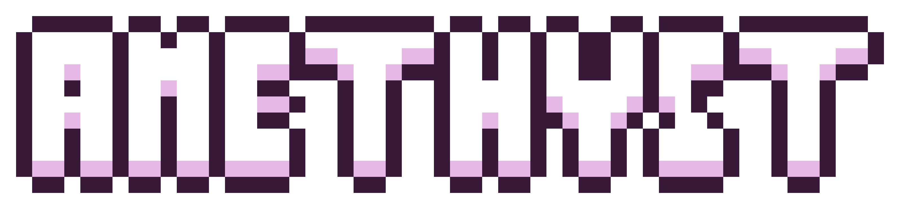
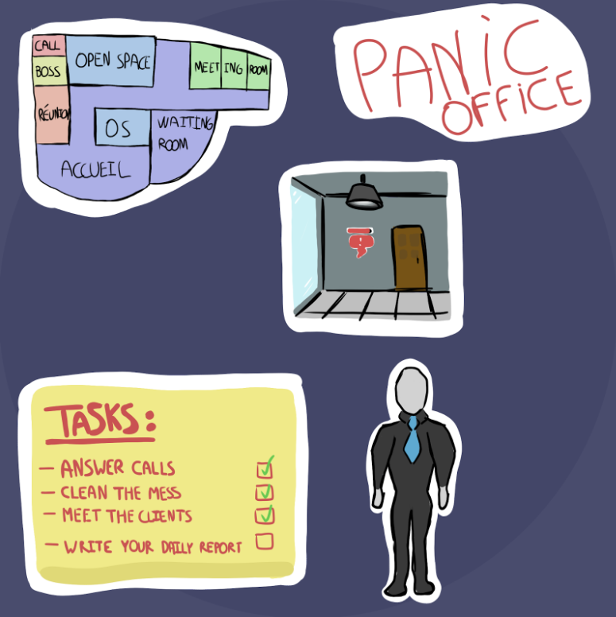
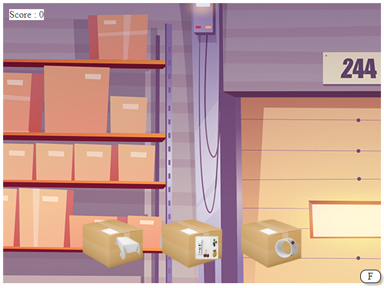
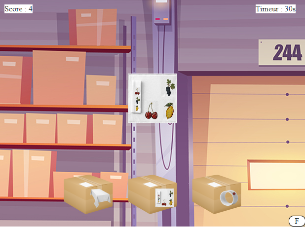
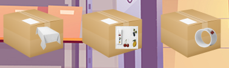
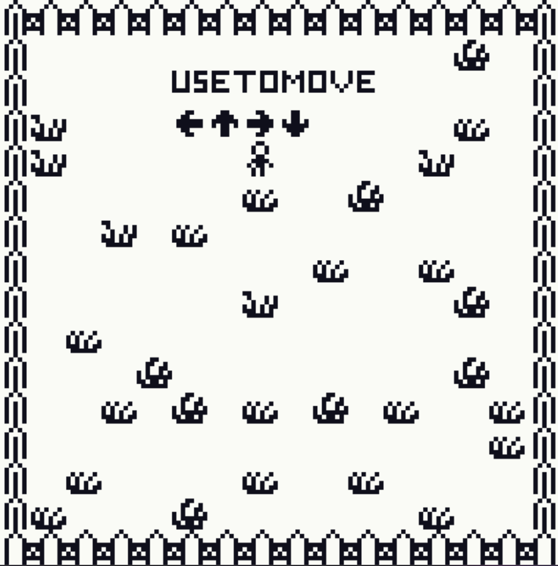

Productions Jeux Vidéo
Amethyst
Vidéo de présentation :
Page Itch.io du jeu Amethyst
Histoire du jeu :
Dans ce jeu, tu incarneras le personnage principal Quentin, patron d'un musée en Auvergne, cherchant la dernière pièce manquante dans son musée, il s'agit de la pièce principale, elle doit être un élément central pour le musée et doit correspondre aux attentes des visiteurs. Quentin a eu une idée, il veut placer une Améthyste comme pièce maîtresse de son musée. Il est donc parti en aventure dans les mines d’Auvergne à la recherche d’une pierre précieuse. C'est à Champagnat-le-Jeune que ce patron se rendra afin de poursuivre sa quête pour le joyaux de ses rêves.
Tags :
2D, Action, Arcade, Auvergne, Unity, Shooter, Pixel art
Game Design Document :
Panic Office
Concept du jeu :
La résilience organisationnelle démontre la capacité pour une entreprise à faire face au mieux à des situations d’incertitude.
Vous venez de vous faire embaucher dans l’entreprise de vos rêves, c’est votre premier jour au poste et vous vous rendez compte que ce qui devait être une expérience enrichissante va vite tourner au cauchemar.
En effet, il semblerait que votre employeur ait oublié de vous préciser que vous serez seul(s) à faire fonctionner l’entreprise !
Jouer seul ou avec jusqu’à trois de vos amis et tentez de survivre le plus longtemps possible, chaque jour les tâches seront de plus en plus nombreuses et vous aurez à faire des choix.
Les clients sont moins patients ou provoquent plus de saleté ? Les appels téléphoniques plus fréquents ou d’autres tâches supplémentaires surviendront ? Peut-être des heures supplémentaires ? Vous aurez chaque jour l’obligation de choisir entre deux difficultés supplémentaires, il sera impossible de revenir en arrière
Tags :
3D, Low Poly, First person view, arcade, unity, rapidité, tâches
Packem'Up
Lien de téléchargement :
PackemUp.ZIPScreenshots :

Concept du jeu :
Petit jeu réalisé en TypeScript dans lequel vous allez devoir empaqueter des colis avec des serviettes, ronds de serviettes et nappes, il faudra être le plus rapide possible et ne pas se tromper de boîte.
Tags :
TypeScript, Jeu de rapidité, reflexes
SlimeQuest
Lien pour jouer :
SlimeQuestConcept du jeu :
SlimeQuest est un jeu réalisé sur Bitsy en 3 heures sur lequel j’ai pu expérimenter un style de jeu RPG simplifié pour me pencher
sur le système de quêtes, pnj, dialogues et récolte d’items sans me soucier de l’environnement graphique autours.
Bitsy est une solution simple pour réaliser un prototype ou une petite histoire sans avoir à écrire une seule ligne de code !
La prise en main de ce moteur sur navigateur se fait en seulement quelques minutes.
Tags :
Bitsy, RPG, Puzzle, Histoire, 2D